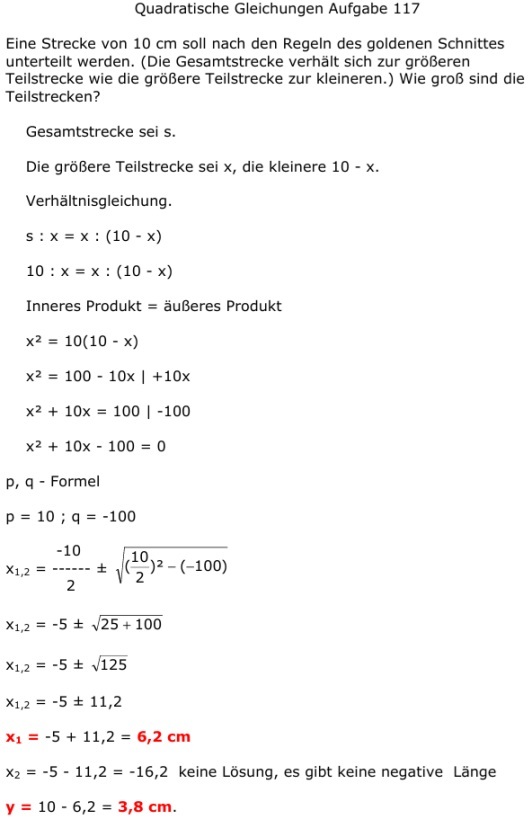

Aufgabe 117 Eine Strecke von 10 cm soll nach den Regeln des goldenen Schnittes unterteilt werden. (Die Gesamtstrecke verhält sich zur größeren Teilstrecke wie die größere Teilstrecke zur kleineren.) Wie groß sind die Teilstrecken? Gesamtstrecke sei s. Die größere Teilstrecke sei x, die kleinere 10 - x. Verhältnisgleichung. s : x = x : (10 - x) 10 : x = x : (10 - x) Inneres Produkt = äußeres Produkt x2 = 10(10 - x) x2 = 100 - 10x | +10x x2 + 10x = 100 | -100 x2 + 10x - 100 = 0 p, q - Formel p = 10 ; q = -100  x1,2 = -5 ± 11,2 x1 = -5 + 11,2 = 6,2 cm x2 = -5 - 11,2 = -16,2 keine Lösung, es gibt keine negative Länge y = 10 - 6,2 = 3,8 cm.